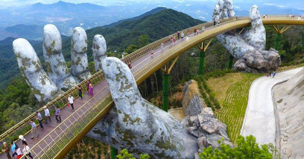
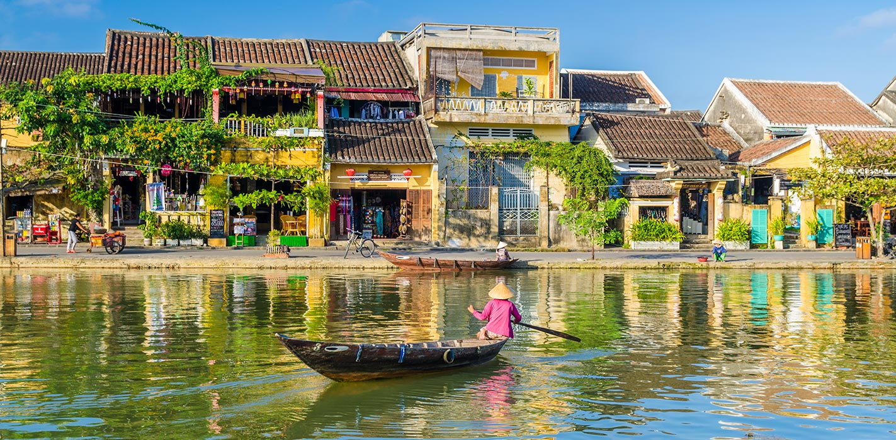
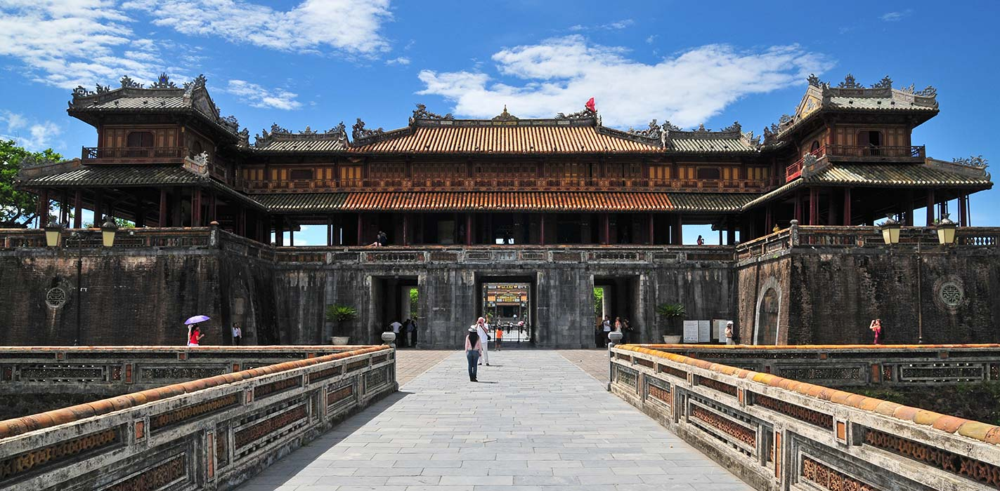

Hanoï
Hanoï se trouve sur le delta du fleuve Rouge qui charrie ses eaux boueuses vers le golfe du Tonkin, à une altitude inférieure à celui-ci, ce qui la rend vulnérable aux inondations. La ville a connu une très forte croissance démographique au cours du XXe siècle, et a contribué par son dynamisme économique à la transformation d'un Vietnam essentiellement agricole à un Vietnam industriel et tertiaire. L'urbanisation et l'industrialisation ont entraîné une pression croissante sur les écosystèmes autour et dans la ville, dont l'un des exemples est la pollution des eaux de la rivière To Lich, affluent du fleuve Rouge étudié par le géographe Yves Duchère
Hô-Chi-Minh-Ville
Hô-Chi-Minh-Ville, dont le statut correspond à celui d'une province vietnamienne, se divise en 19 arrondissements et 5 districts possédant une superficie de 2 090 km2 pour une population de 8 224 400 habitants1 (2015). Elle se trouve sur les rives de la rivière de Saïgon. Située à proximité du delta du Mékong, cette ville est la métropole du Sud du pays. Elle n'était à l'origine qu'un village de pêcheurs khmer et devint à partir du xviie siècle une ville de peuplement vietnamien (et chinois) sous l'impulsion de la cour impériale des Nguyên à Hué. Pendant la colonisation française, elle fut d'abord la capitale de la colonie de Cochinchine, puis celle de l'Indochine française de 1887 à 1901.s
Lieux à découvrir :
| Lieu | Description |
|---|---|
|
Le pont doré  |
Le pont d'or (en vietnamien : Cầu Vàng) est un pont piétonnier long de 150 mètres, construit dans les collines Bà Nà (en), située à 1400 m d'altitude près de Da Nang au Viêt Nam1. Ce pont a été conçu uniquement pour servir d'attraction touristique et comme point de vue sur les collines boisées du centre du pays. Le pont forme une boucle, et semble être soutenu par deux immenses mains en béton |
|
Hội An  |
Divers styles architecturaux se retrouvent à Hội An : chinois, japonais, français. Huit cent quarante-quatre bâtiments sont répertoriés pour leurs intérêts historique et architectural. La ville est construite sur 2 axes perpendiculaires. Celui qui est parallèle à la rivière dispose de nombreux bâtiments commerciaux. Les clients peuvent y accéder facilement alors que l’arrière de ceux-ci promeut les échanges des marchandises transportées par bateau. |
|
Huế  |
Capitale des Nguyễn, les seigneurs du Sud, au xvie siècle, Hué devient la capitale du Viêt Nam tout entier après sa réunification par Gia Long en 1802. La Cité impériale de Hué se bâtit tout au long du xixe siècle. Devenue la résidence impériale et le siège de la cour, Hué acquiert un grand prestige et un grand raffinement qui se traduisent notamment dans la musique et dans la gastronomie. La cité interdite est entièrement détruite en 1885 par les Français qui massacrent, incendient et pillent la ville. Les palais, archives et bibliothèques furent réduits en cendres |